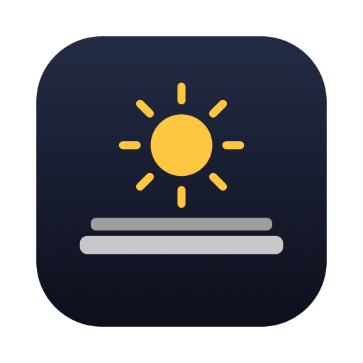

Lid Awake
Keep your MacBook running with the lid closed.


Install
Paste this in the Terminal:
curl -fsSL https://make-become.github.io/lid-awake/install.sh | sh
Or ask Claude to do it
Paste this in Claude Code or Claude Desktop:
Install Lid Awake on my Mac.